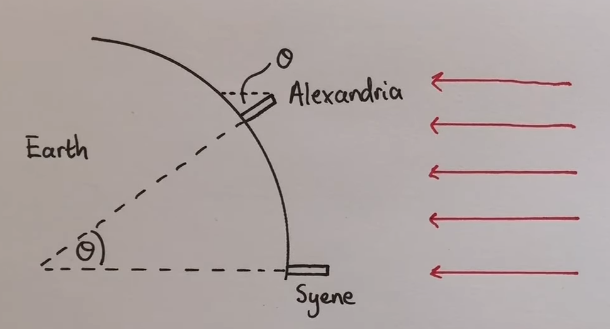

Weltbilder
Aber zuerst …
Verfassungsviertelstunde!!!!
Das Grundgesetz für die Bundesrepublik Deutschland schützt die Freiheit, Würde und informationelle Selbstbestimmung des Einzelnen. Digitale Unabhängigkeit wird so zu einer praktischen Umsetzung der im Grundgesetz verankerten Freiheitsrechte im digitalen Raum.
Was ist Digitale Unabhängigkeit eigentlich?
Wie alles begann ..
600 v.Ch - China
Der Schöpferriese Phan Ku schlüpft aus einem Ei. Er schuf die Welt, indem er mit einem Meißel Täler in in die Landschaft schlug und Berge errichtete. Dann setzte er Sonne, Mond und Sterne an den Himmel und starb.
Sein Tod ist Teil der Schöpfung, sein Schädel wurde zum Himmelsgewölbe, sein Fleisch der Erdboden, seine Knochen die Steine und sein Blut die Flüsse und Seen. Sein letzter Atemhauch schuf Wolken und Wind und sein Schweiß wurde der Regen.
Sein Haar fiel zur Erde und wurde zu Planzen und aus den Flöhen, die in seinem Haar hausten, wurde die Menschheit.
Da unsere Geburt den Tod des Schöpfers erforderte, stehen wir unter dem ewigen Fluch von Kummer und Leid.
Die Edda – Island
Ein gähnender Abgrund trennte die gegensätzlichen Reiche Muspellsheim (Feuer und Hitze) und Niflheim (Schnee und Kälte).
Die Hitze schmolz das Eis und das Wasser tropfte in die Schlucht. Dort entstand das Leben in Form des Riesen Ymir. Damit begann die Schöpfung der Welt.
Das Volk der Krachi – Westafrikanische Togo
Der riesige blaue Gott Wulbari (=Himmel) befand sich ein Stück über der Erde. Eine Frau stampfte mit einem langen Stab Getreide und störte ihn, so dass er höher stieg. Die Menschen ließen ihn nicht in Ruhe und verwendeten Teile von ihm als Handtücher oder als Würze ihrer Suppe. Daraufhin stieg er in unerreichbare Höhen (aktueller Stand).
Das Volk der Yoruba (Westafrika)
Olrun war der Besitzer des Himmels, die Erde war trostloses Sumpfland. Er schickte eine Muschel hinab zur Erde, die eine Henne, eine Taube und etwas Erdreich enthielt. Das Erdreich wurde verteilt und Henne und Taube pickten und scharrten so lange, bis sich das Sumpfland verfestigte. Zur Kontrolle schickte Olrun das blaue Chamäleon zur Erde, das sich dabei braun verfärbte, als Zeichen, dass die Umwandlung gelungen war.
Griechenland
Sonne ist ein Feuerwagen, der vom Gott Helios über den Himmel gejagt wird. …
Erkenntnis
Alle Schöpfungsmythen
- spiegeln Gesellschaft und Umwelt wider
- enthalten (mindestens) ein übernatürliches Wesen
- sind absolute Wahrheit für die jeweilige Gesellschaft
Zweifel wurden als Ketzerei betrachtet.
(Allerdings ist der Begriff Ketzerei christlich geprägt – Häresie ist treffender).
Wie es weiter ging …
Griechenland
Ab 600 v.Chr wird es liberaler
- Philosopie darf eigene, abweichende Erklärungen des Universums erfinden.
- Es wurden auch Erklärungen ohne Götter gefunden
Beispiele
Anaximandros von Milet
Die Sonne ist ein Loch in einem feuergefüllten Ring, der sich um die Erde dreht. Mond und Sterne sind ebenfalls Löcher.
Xenophanes von Kolophon
Die Erde dünstet brennbare Gase aus, die sich nachts sammeln und nach dem Erreichen einer kritischen Masse entzünden und die Sonne bilden. Ist die Gaskugel verbrannt, ist Nacht. Sterne sind Restfunken. Der Mond entsteht aus anderen Gasen, die in einem 28-Tage Zyklus entstehen und abbrennen.
Fazit
Die Griechen glaubten, dass das Universum verstanden werden kann.
Versuche beginnen, die mathematischen Regeln hinter den Himmelskörpern zu finden (Pythagors, 540 v.Ch).
Blöd gelaufen
500 vCh Philalos … 310 vCh:
Aristarchos beschreibt ein exaktes Heliozentrisches Weltbild (incl. Erdrotation).
Problem:
Das Weltbild widerspricht dem gesunden Menschenverstand und wird verworfen - für 1500 Jahre.
Erkenntnisse
Die Erde ist eine Kugel, denn
- Schiffe verschwinden am Horizont
- Mond ist rund - warum nicht auch die Erde
- Erdschatten bei Mondfinsternis ist ebenfalls rund
Immer noch Erde als Zentrum, Mittelpunkt, da niemand „runter“ fällt.
Berechnungen
Erdumfang

- gemessener Winkel: \(7,2^\circ\)
- \(7,2^\circ = \frac{1}{50} \cdot 360^\circ\)
- Abstand von Seyne - Alexandria ist \(\frac{1}{50}\) Erdumfang
Wichtig
Die Methode ist korrekt, Abweichungen sind Messfehler!
Weitere Schritte
- Durchmesser Mond
- Abstand Erde-Mond
- Durchmesser Sonne
- Abstand Erde-Sonne
- …
Babylonier
Keine Wissenschaftler (da Erklärung durch Götter) aber Numbercruncher.
Ägypter
Techniker, Ingenieure aber keine Naturwissenschaftler.
Technik hat das Ziel, das Leben „besser zu machen“ - Naturwissenschaft will Neugierde befriedigen und keine Bequemlichkeit.
Die Grenze zwischen Naturwissenschaftler und Techniker kann verschwimmen.
Nach dem Jahre 0
Ptolemäus (2. Jhd)
Der Mars läuft RÜCKWÄRTS????
Kreise auf Kreisbahnen auf Kreisbahnen – Zyklen und Epizyklen
Völlig falsch, aber extrem genau
Kopernikus
1473 Polen, Ausbildung Kirchenrecht und Medizin in Italien.
Gelangweilter Leibarzt seines Onkels
Erstes Werk (20 Seiten, 1514) , damals kaum gelesen
Erstellt Postulate
Postulate
Die Himmelskörper haben keinen gemeinsamen Mittelpunkt
Der Mittelpunkt der Erde ist nicht der Mittelpunkt des Universums.
Der Mittelpunkt des Universums liegt in der Nähe der Sonne.
Der Abstand Erde-Sonne ist winzig im Vergleich zum dem zu den Sternen
Die scheinbare tägliche Bewegung der Sterne kommt von der Erdrotation
Die scheinbare Sternenbewegung im Jahreszyklus kommt von der Bewegung der Erde um die Sonne.
Die scheinbare Rückwärtsbewegung mancher Planeten ist die Folge der Erdbewegung.
Drama um Kopernikus
30 Jahre Verfeinerung, 200 Seiten
Angst vor Veröffentlichung wegen Kirche.
1539 Rhetikus (25 Jahre alt) bestärkt ihn und bringt es 1541 in die Druckerei.
Wollte Druck beaufsichtigen, musste weg, Osiander übernimmt. Veröffentlichung 1543.
Kopernikus (bettlägrig) bekommt das Buch übergeben und stirbt
Gründe
Rhetikus fehlt in der Danksagung und ist beleidigt - Könnte an „Protestant“ gelegen haben.
Ohne Wissen von Kopernikus wurde ein Vorwort eingefügt, das den Inhalt seines Werkes zum „hypothetischen Gedankenspiel“ herunterstuft.
Verdacht: Osiander wollte Kopernikus schützen, Folge: Das Buch findet kaum Beachtung, und hat 100 Jahre keine Wirkung.
Angst vor der Kirche war begründet: Giordano Bruno wurde für ähnliche Aussagen von der Kirche ermordet.
Tycho Brahe
1546 Dänemark, 1566 Duell mit Cousin wegen Prophezeihung
Nase als Gold-Silber-Kupfer
Neu Präzision beim Beobachten. König Friedrich II von Dänemark überlässt ihm die Insel Hven (Schloss Uranienborg).
Feiert gerne, hat einen Elch als Haustier
Elch fällt betrunken die Treppe hinunter – tot
1588 stirbt FII, Brahe muss umziehen, landet in Prag, schließt sich mit Johannes Kepler zusammen.
Tycho Brahe
1601 Tycho stirbt aus Höflichkeit
Kepler erbt sein Daten
Plant Lösung des Mars-Problems in 8 Tagen
Schafft es nach 8 Jahren
Galileo Galilei
1564, Pisa
1608 Kontakt mit dem Fernrohr, entwickelt es weiter
Bestätigt durch Beobachtung die Rechnungen von Kepler
Schreibt ein Buch darüber
Ärger mit der Kirche
Hausarrest
1992 Entschuldigung der Kirche
Keppler - Details
Keppler - Gesetz 1
Die Bahn eines jeden Planeten ist eine Ellipse, wobei die Sonne in einem der beiden Brennpunkte steht.
Was ist eine Ellipse?

1. Keplersches Gesetz
Keppler - Gesetz 2
Die Geschwindigkeit der Planeten auf ihrer Bahnellipse ist nicht konstant, sondern variiert so, dass ein von der Sonne zum Planeten gezogener Fahrstrahl in gleichen Zeitabschnitten gleich große Flächen überstreicht.
Keppler - Gesetz 3
Die Quadrate der Umlaufzeiten je zweier Planeten verhalten sich zueinander wie die Kuben (die dritten Potenzen) der großen Halbachsen ihrer Bahnellipsen.
\[\frac{T_1^2}{T_2^2} = \frac{a_1^3}{a_2^3}\]